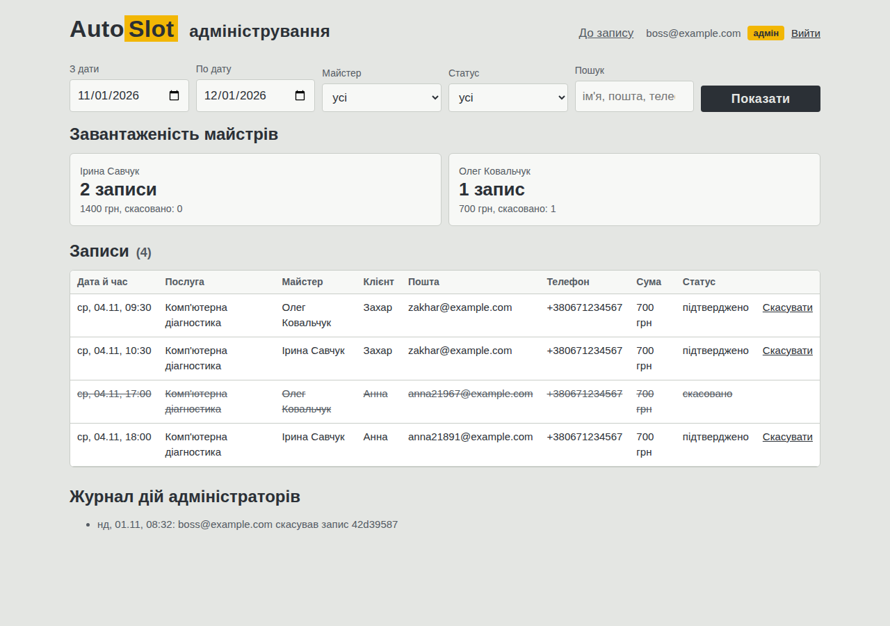
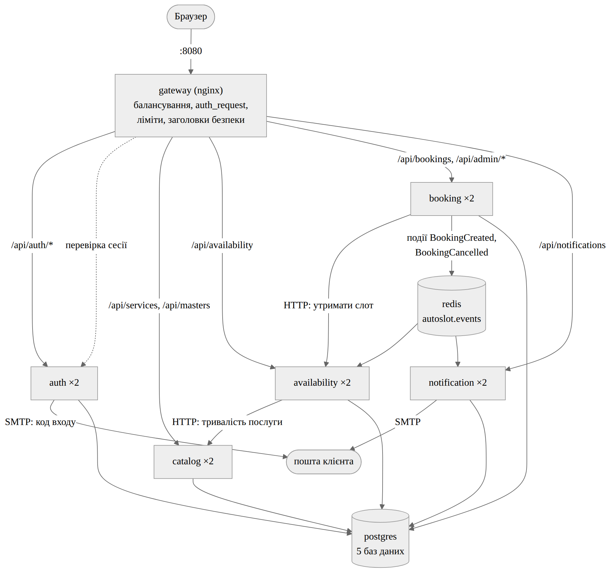
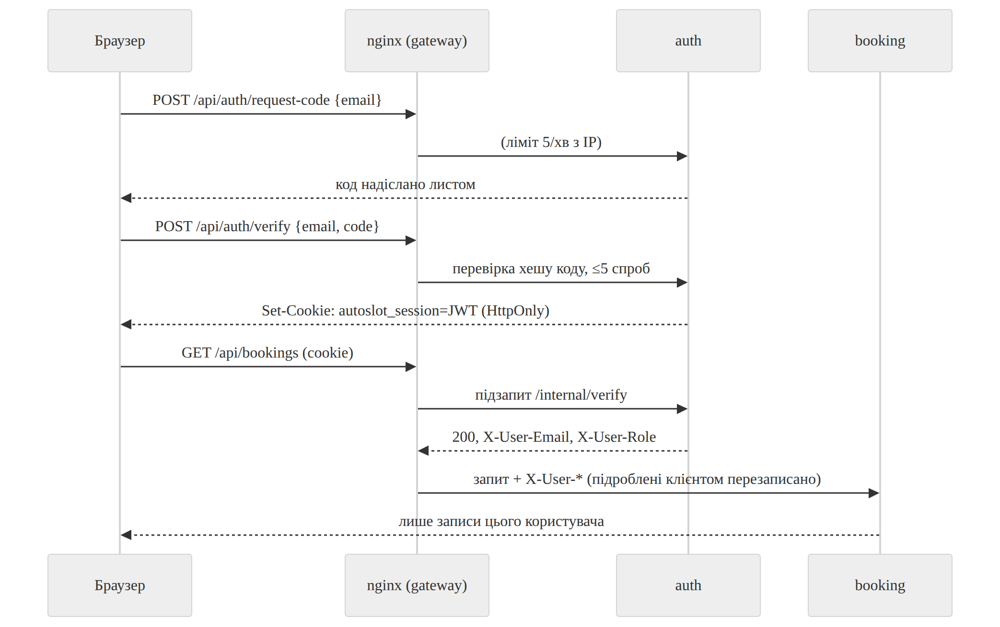
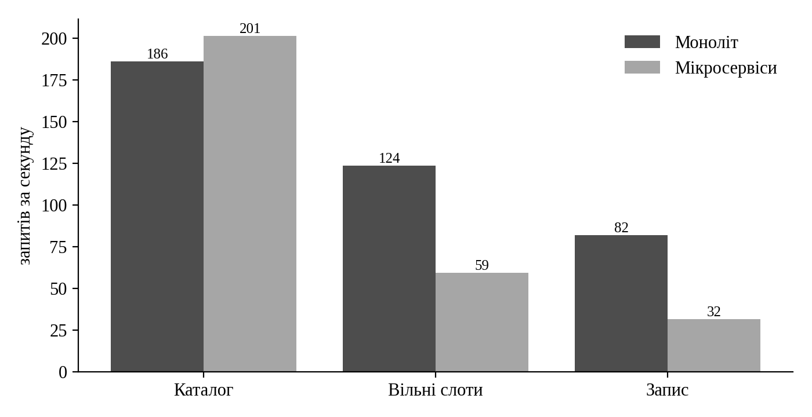
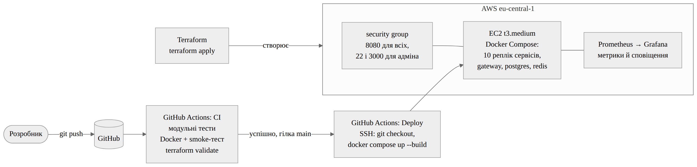
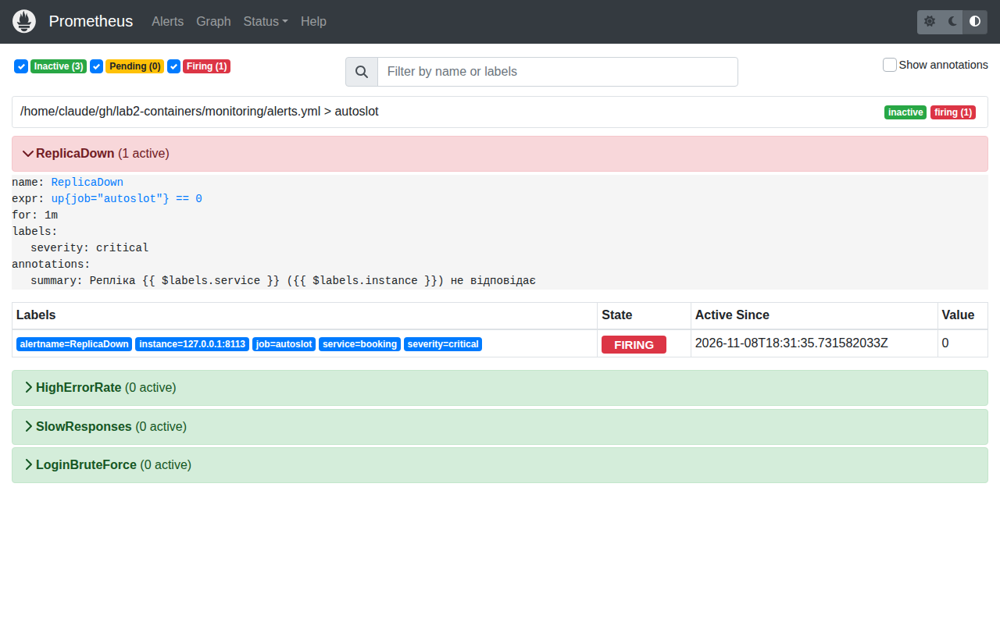
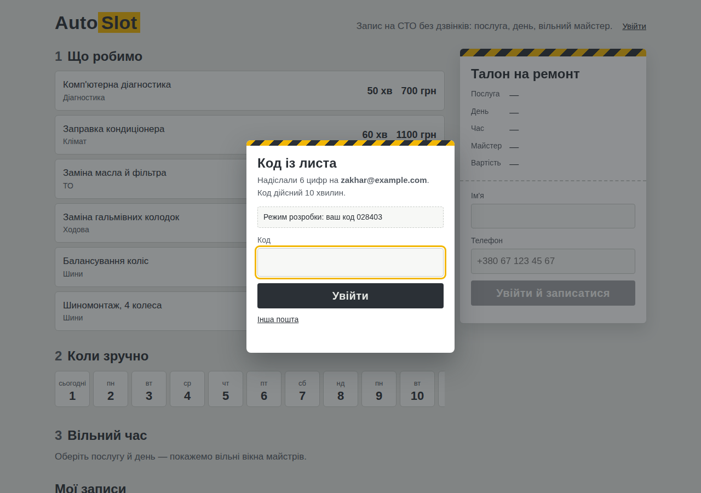
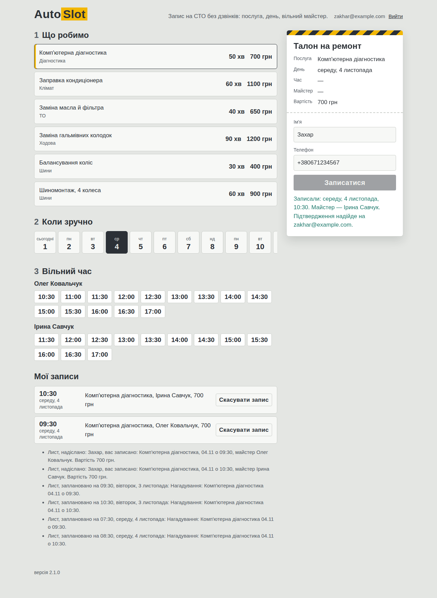

Хмарна система онлайн-запису на СТО
Навчальний проєкт з дисципліни «Хмарні та GRID-технології»
Задача
Функціональність

Архітектура

Безпека

Етапи
| Етап | Що зроблено | Результат |
|---|---|---|
| ЛР1 | моноліт FastAPI + веб-клієнт, Render як код | захист від подвійного запису |
| ЛР2 | мікросервіси в Docker, репліки, вхід, адмін-панель, AWS | відмова сервісу не зупиняє запис |
| ЛР3 | моноліт проти мікросервісів, однакова функціональність | виміряна ціна мікросервісів |
| ЛР4 | Terraform, GitHub Actions, Prometheus і Grafana | розгортання й оновлення без ручних дій |
ЛР3: вимірювання

більше запитів/с у моноліту на операціях з кількома модулями
менше пам'яті в моноліту
Мікросервіси натомість ізолюють відмови й масштабуються вибірково
ЛР4: експлуатація

ВМ, мережеві правила й запуск застосунку — однією командою apply
тести, система в Docker + 20 перевірок, автодеплой
метрики всіх реплік, 10 панелей, 4 правила сповіщень
Моніторинг

Демонстрація


Підсумки
github.com/yaroslavkondrasiuk/autoslot-cloud